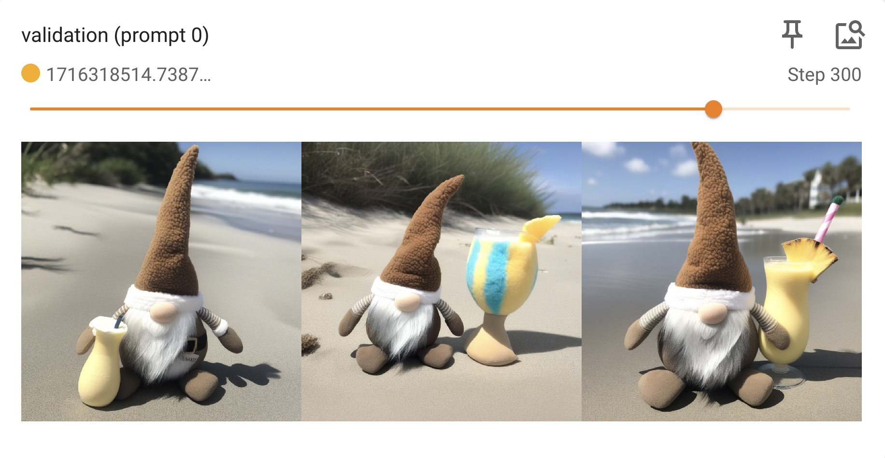

LoRA with Masks - SDXL
This tutorial explains how to prepare masks for an image dataset and then use that dataset to train an SDXL LoRA model.
Masks can be used to weight regions of images in a dataset to control how much they contribute to the training process. In this tutorial we will use masks to train on a small dataset of images of Bruce the Gnome (4 images). With such a small dataset, there is a high risk of overfitting to the background elements from the images. We will use masks to avoid this problem ond focus only on the object of interest.
1 - Dataset Preparation
For this tutorial, we'll use a dataset consisting of 4 images of Bruce the Gnome:
This sample dataset is included in the invoke-training repo under sample_data/bruce_the_gnome.
2 - Generate Masks
Use the generate_masks_for_jsonl_dataset.py script to generate masks for your dataset based on a single prompt. In this case we are using the prompt "a stuffed gnome":
python src/invoke_training/scripts/_experimental/masks/generate_masks_for_jsonl_dataset.py \
--in-jsonl sample_data/bruce_the_gnome/data.jsonl \
--out-jsonl sample_data/bruce_the_gnome/data_masks.jsonl \
--prompt "a stuffed gnome"
The mask generation script will produce the following outputs:
- A directory of generated masks:
sample_data/bruce_the_gnome/masks/ - A new
.jsonlfile that references the mask images:sample_data/bruce_the_gnome/data_masks.jsonl
3 - Review the Generated Masks
Review the generated masks to make sure that the target regions were masked. You may need to adjust the prompt and re-generate the masks to achieve the desired result. Alternatively, you can edit the masks manually. The masks are simply single-channel grayscale images (0=background, 255=foreground).
Here are some examples of the masks that we just generated:
4 - Configuration
Below is the training configuration that we'll use for this tutorial.
Raw config file: src/invoke_training/sample_configs/sdxl_lora_masks_gnome_1x24gb.yaml.
# Training mode: LoRA with masks
# Base model: SDXL 1.0
# Dataset: Bruce the Gnome
# GPU: 1 x 24GB
type: SDXL_LORA
seed: 1
base_output_dir: output/bruce/sdxl_lora_masks
optimizer:
optimizer_type: AdamW
learning_rate: 7e-5
lr_scheduler: constant_with_warmup
lr_warmup_steps: 50
data_loader:
type: IMAGE_CAPTION_SD_DATA_LOADER
dataset:
type: IMAGE_CAPTION_JSONL_DATASET
jsonl_path: sample_data/bruce_the_gnome/data_masks.jsonl
resolution: 1024
aspect_ratio_buckets:
target_resolution: 1024
start_dim: 512
end_dim: 1536
divisible_by: 128
# General
model: stabilityai/stable-diffusion-xl-base-1.0
# vae_model: madebyollin/sdxl-vae-fp16-fix
gradient_accumulation_steps: 1
weight_dtype: bfloat16
gradient_checkpointing: True
cache_vae_outputs: True
max_train_steps: 500
save_every_n_steps: 50
validate_every_n_steps: 50
use_masks: True
max_checkpoints: 5
validation_prompts:
- A stuffed gnome at the beach with a pina colada in its hand.
- A stuffed gnome reading a book in a cozy library.
train_batch_size: 4
num_validation_images_per_prompt: 3
Full documentation of all of the configuration options is here: LoRA SDXL Config
There are few things to note about this training config:
- We set
use_masks: Truein order to use the masks that we generated. This configuration is only compatible with datasets that have mask data. - The
learning_rate,max_train_steps,save_every_n_steps, andvalidate_every_n_stepsare all lower than typical for an SDXL LoRA training pipeline. The combination of masking with the small dataset size cause training to progress very quickly. These configuration fields were all adjusted accordingly to avoid overfitting.
5 - Start Training
Launch the training run.
# From inside the invoke-training/ source directory:
invoke-train -c src/invoke_training/sample_configs/sdxl_lora_masks_gnome_1x24gb.yaml
Training takes ~30 mins on an NVIDIA RTX 4090.
4 - Monitor
In a new terminal, launch Tensorboard to monitor the training run:
Access Tensorboard at localhost:6006 in your browser.Sample images will be logged to Tensorboard so that you can see how the model is evolving.
Once training is complete, select the model checkpoint that produces the best visual results. For this tutorial, we'll use the checkpoint from step 300:
 Screenshot of the Tensorboard UI showing the validation images for epoch 300. The validation prompt was: "A stuffed gnome at the beach with a pina colada in its hand.".
6 - Import into InvokeAI
If you haven't already, setup InvokeAI by following its documentation.
Import your trained LoRA model from the 'Models' tab.
Congratulations, you can now use your new Bruce-the-Gnome model! 🎉